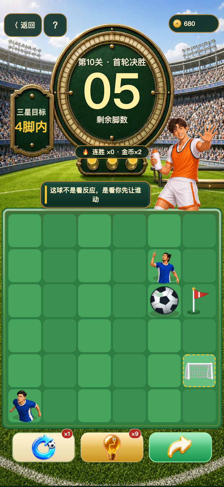

微信小游戏 · 足球路线解谜
先看路线，
再出这一脚
《一脚晋级》把整片球场收进 6×6 格子：一脚滑出，足球沿直线冲到底，停在哪，全看你的判断。右边这块小球场就是真实玩法的缩小版——不用下载，现在就能踢。
-
一滑到底足球滑到障碍、边界或球门才停，先看路线再动手。
-
500 关逐层加规则泥地、转向、越位、队友/对手、对手门将、黄牌、传送门陆续登场，每关程序验证有解。
-
微信里直接开踢搜《一脚晋级》即玩，小程序码在页底等你。
试玩 · 迷你球场
三步破门挑战
步数 0
三星目标 · 3 步内

拖动足球、在球场上滑动，或按方向键：朝球门滑出这一脚。路线会在你拖动时提前亮出来。
这一步踢完别停——往下滑，看 500 关怎么一层层加码。
关卡设计
500 关，不是重复堆量
规则一层一层加进来，每一层都改写你对路线的判断。点开一级，看看它到底改变了什么。每一关上线前都经过程序验证：必有解。
前期 · 上手
基础移动
它改写了
真实截图
同一关，从开球到三星晋级
下面三张来自真实关卡「第 10 关 · 首轮决胜」：开球前、一脚之后、三星晋级。点两侧的卡，或用按钮切换，把这一局翻完。



立即开玩
现在，轮到你开球了
打开微信，搜索《一脚晋级》。500 关球场已经摆好，第一脚从你今天开始。

微信搜《一脚晋级》
本地原型展示，发布前需微信实扫确认